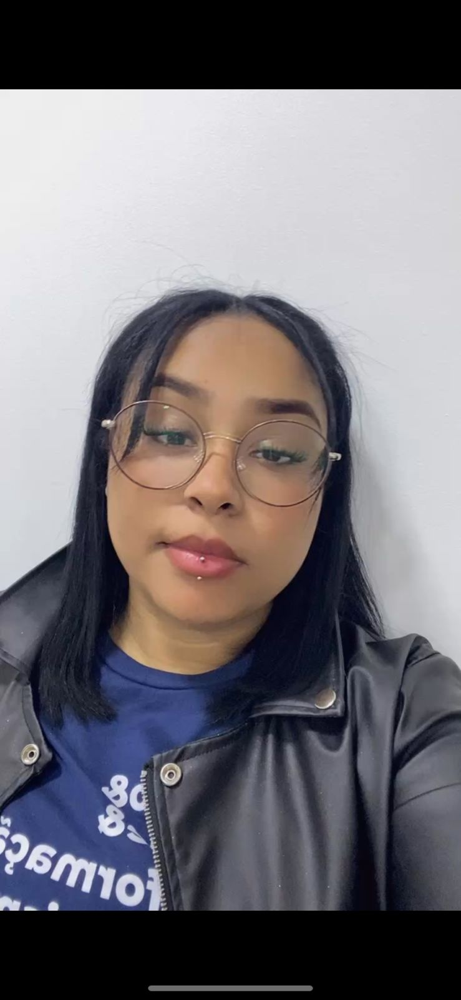
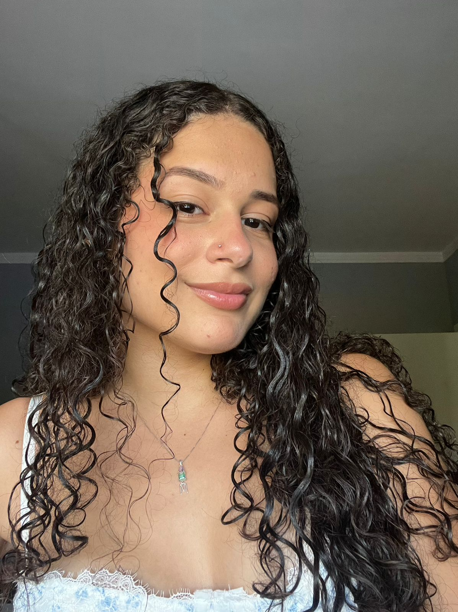
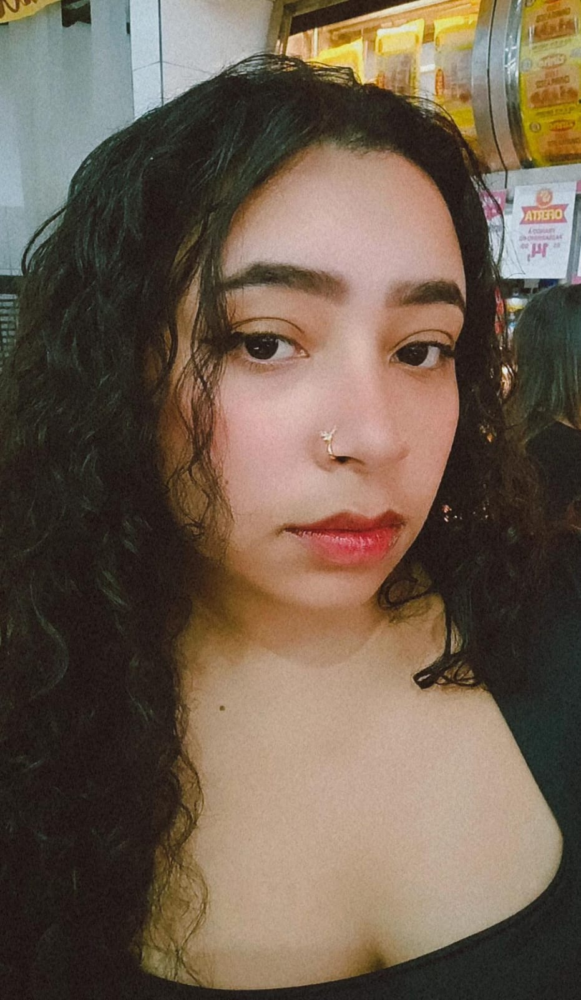
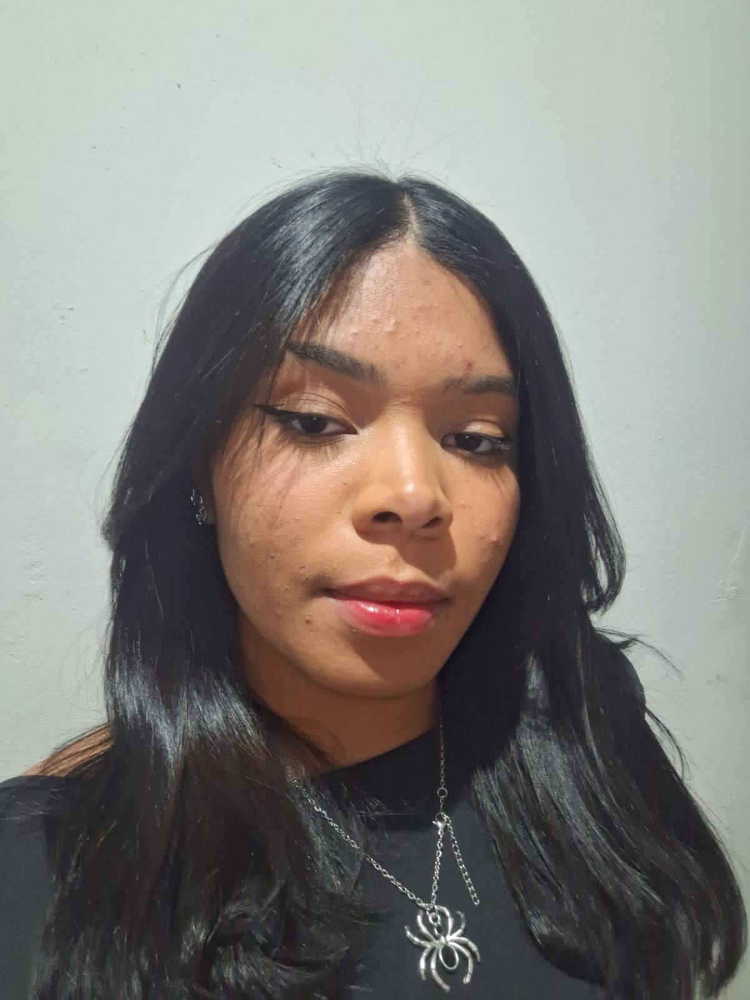
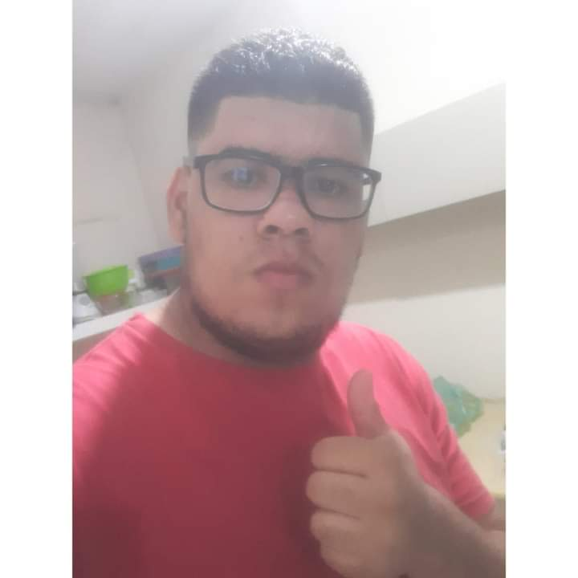
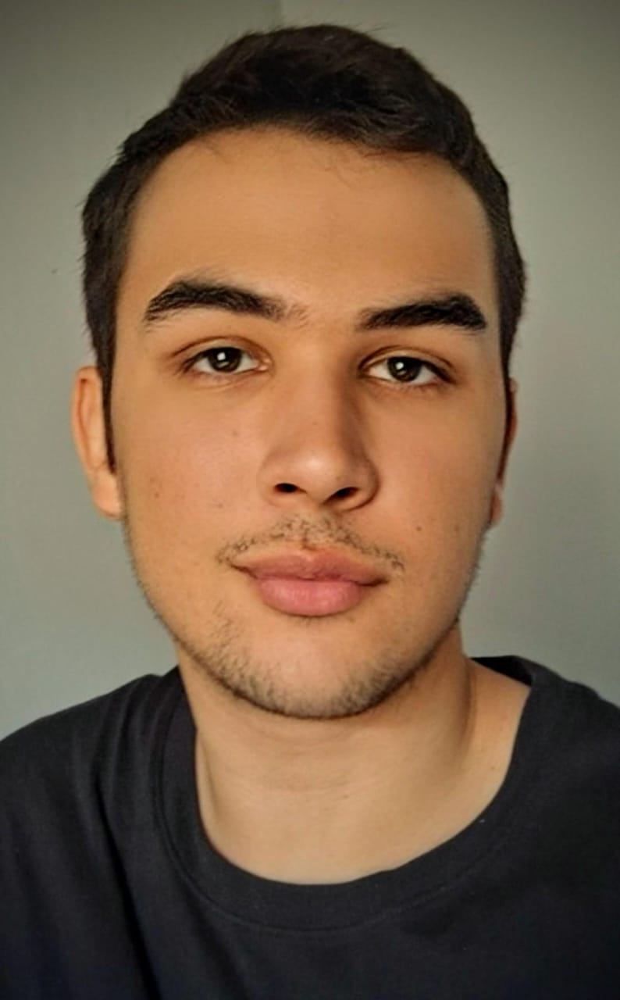
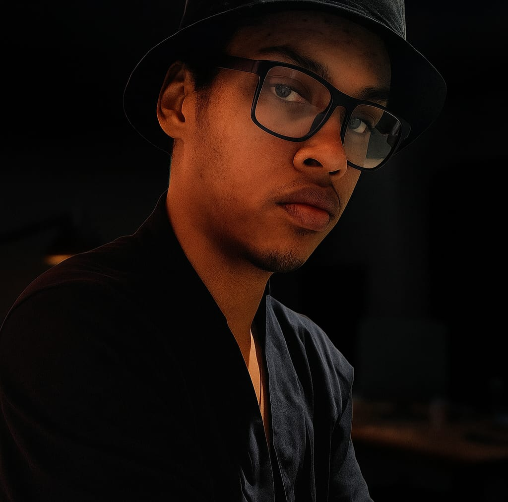
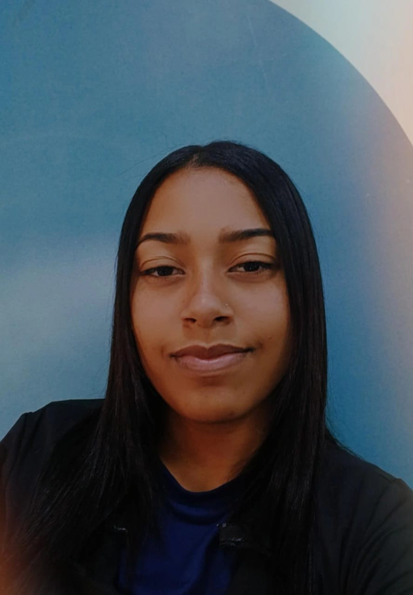

Marketing
Divulgam e fazem pesquisa de campo.
Vitoria - Líder
Yasmin - Comunicação Visual
Maria Eduarda - Pesquisa de Mercado
Joyce - Análise de Tendência
Pesquisa e Tecnologia
Investigam o mercado, desenvolvem o software e garantem que a pulseira e o aplicativo funcionem com precisão e segurança.
Isadora - Líder
Miriã - Programação e Software
Leonardo - Pesquisa Tecnológica
Logística
Organizam os materiais, produtos e transporte necessários, além da gestão dos valores.
Beatriz - Líder
Isabela - Coordenação de Recursos
Eduarda Ferreira - Inclusão Operacional
RH
Garantem que o projeto seja inclusivo, acolhedor, alinhado com os valores de diversidade e empatia. E trabalham com a gestão
de pessoas.
Alexandre - Líder
Luis - Gestão de Equipe
Rafaella - Cultura e Inclusão